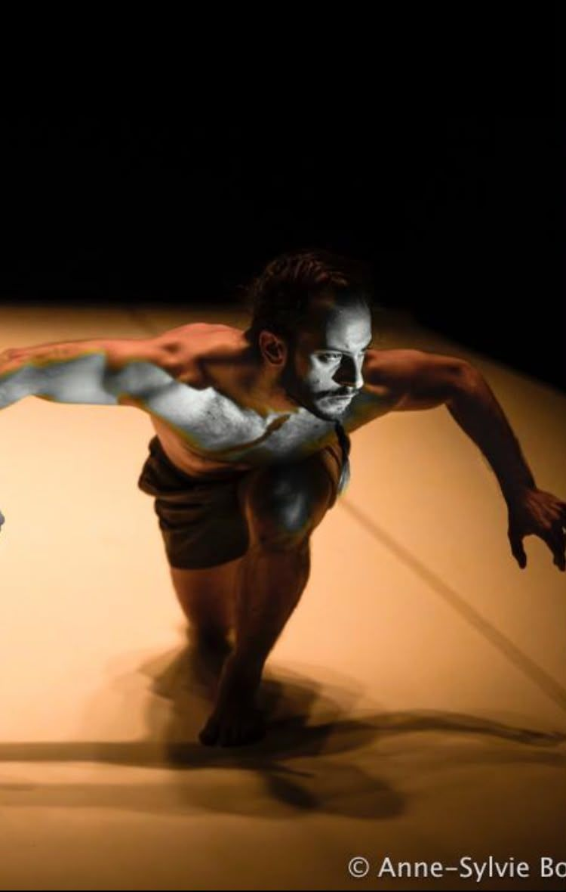
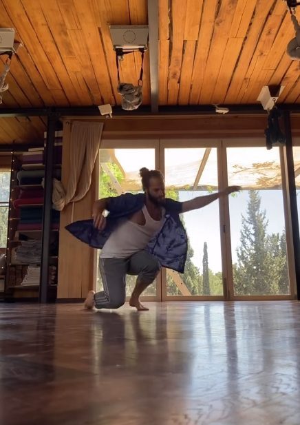
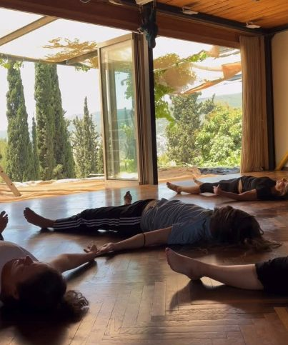
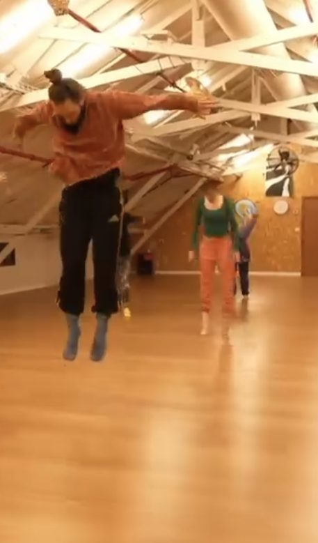
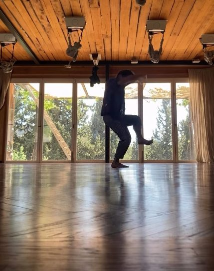
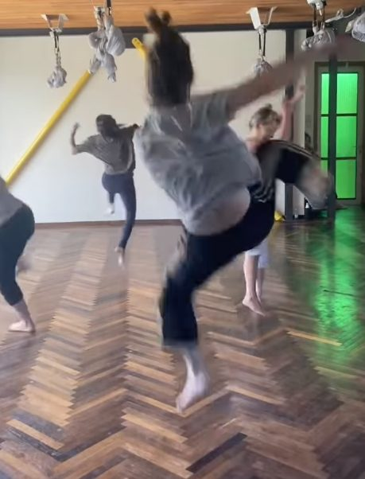
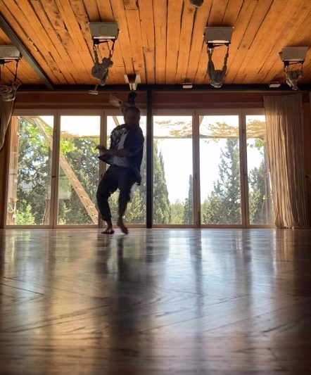
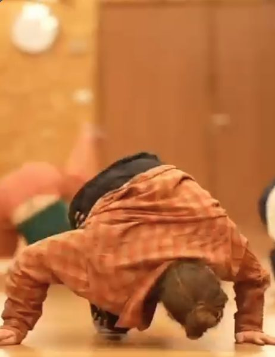
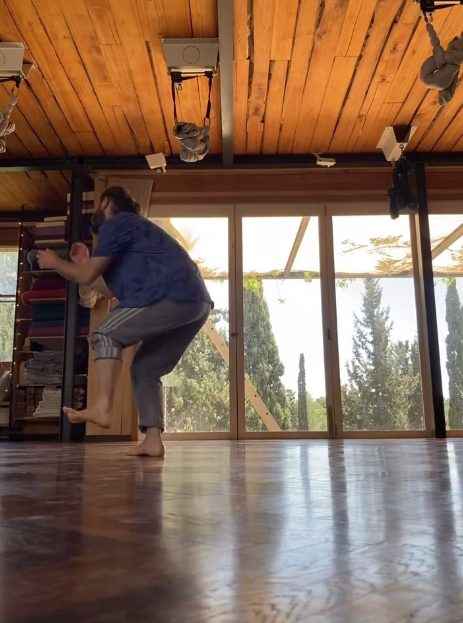
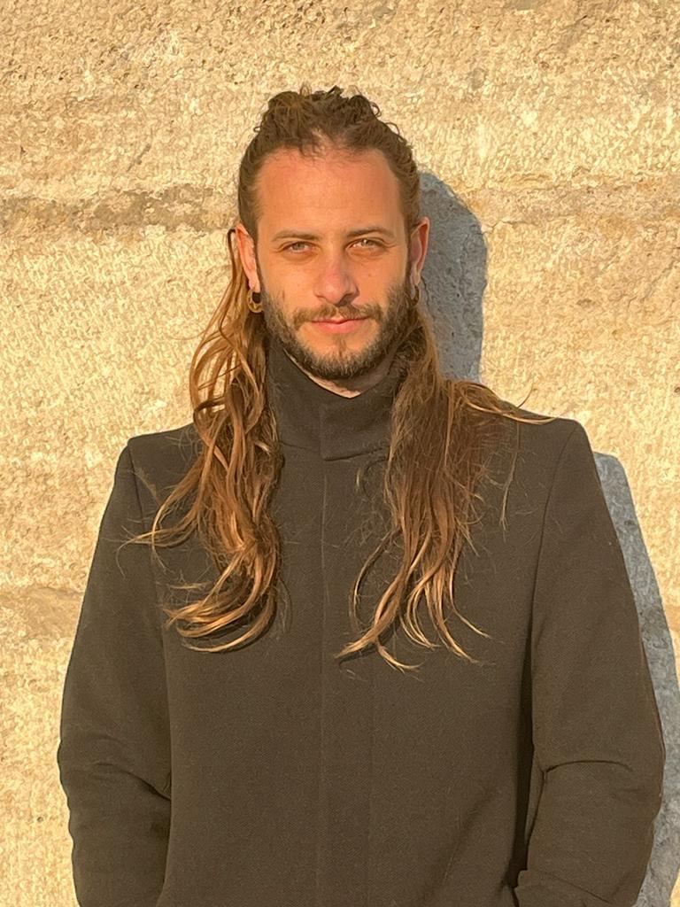

26.12שבת12:00–16:00
הסדנה הראשונה • קריית טבעון
עלות: 300 ש״ח | מיקום: יימסר לאחר התשלום
שלוש סדנאות תנועה

העמקה, תנועה והתפתחות
במהלך הסדנאות נחווה ונעמיק בכלים רבים מעולמות התנועה וביטוי יצירה:
הקשבה למשקל, לקרקע ולשחרור מפרקים ושרירים
חקירה תנועתית חיה, דימויים וגילוי אפשרויות חדשות
הקשבה, מגע, משקל ומפגש בתנועה עם האחר והמרחב
פתיחת נשימה, צליל וביטוי חי מתוך הגוף
אלתור, הקשבה לרגש, כתיבה ומציאת קול אישי








במהלך הסדנאות תתאפשר לשפה החדשה להיספג בתאים. ההעמקה וההתמסרות ייצרו לנו פעימה של בריאות והתחדשות, זרימה רגשית מנטלית ופיזית.
נניע הרבה דרך הגוף הנע, נעשה בתוכנו מקום. נתחזק ונתגמש באופן טבעי דרך ההתמדה והתנועה.
דרך העייפות העצבות השמחה וההתרגשות, יש קסם שלא משנה איך קמתי אני מגיע לסטודיו ולומד לנוע עם מי שאני היום.
מתרגש לחלוק יחד כלים וידע שאספתי בשנים האחרונות כרקדן וכאדם ממורים ואמנים רבים.
מועדים והרשמה
הסדנאות דומות באופיין וכל אחת עומדת בפני עצמה, תוך חקירה חיה של התנועה, הגוף, הקול, הרגש, הכתיבה והמפגש.
אפשר להירשם לאחת או לכולן.

על המנחה
אבא לסמאיא שמס, איש לניירוז, רקדן יוצר, משתתף ומופיע בפרוייקטים עם כוריאוגרפים רבים בארץ ובעולם. רקד בלהקת אדמה.
חוקר תודעה ורבדים שונים של הוויה דרך תנועה וקול. מלמד עבודת רצפה, מחול עכשווי, תנועה חופשית וקונטקט. משלב בין טכניקה וחקירה סומאטית.
מילים שנותרו מהדרך
״משהו מופלא ומרתק התרחש בי בסדנא של נפתלי. המרחב שהוא יצר היה רווי בשקט פנימי בצירוף של תנועה אוורירית מיימית. יכולתי מתוך התהליך שהוא יצר איתנו לאט להרפות, לפתוח מימדים רבים בגוף בהמון רכות ונועם ומשם לצאת למסע חקירה מרתק בתחומים כה רבים.
נפתלי העניק לנו מסע מאוד שלם ובתוכו נגענו בכל כך הרבה עולמות שפתחו שאלות עומק כה רבות בזמן כה קצר. הרגשתי את קולו הנעים שמלווה אותנו בהתבוננות עמוקה, את הזרימה שלו והפתיחות להרגיש את הקבוצה ולהשתנות כשצריך בקלילות. יצאתי בחווית פתיחות גדולה והשראה ממנו, מהמרחב ומהתוכן״.
(עינת פלד)
נפתלי, פתחת את הראש והגוף לאפשרויות שלא ידעתי שקיימות עם כל כך הרבה חן ומשחקיות.
(רויטל מטר)
אתה מורה מדהים...
״המפגש עם נפתלי כמורה היתה בעיקר בעיקר חוויה נעימה ואוהבת. גם הכניסה לסטודיו לוותה במבט ששמח לראות ולפגוש וגם בסקרנות מה המפגש יביא וזה נתן תחושה מזמינה ומאפשרת.
הלימוד עצמו נעשה במתח שבין דידקטיות ודיוק לצד משחקיות, חופש והתאמה לתלמיד. כלומר, ניכר הרצון של נפתלי ללמד ושהתלמידים בשיעור יבינו באופן עמוק את מה שהוא מלמד יחד עם ההבנה שהתלמידים מגיעים ברמות שונות ועם יכולות שונות, ומתוך זה הוא מציע מגוון של אופציות כדי שכולם יצאו בתחושה מעורבת של מאמץ והצלחה. לי היה נעים ומלמד ומפתח, יחד עם תחושת השראה מהיכולות התנועתיות של נפתלי והפשטות שבה הוא מנגיש אותם.״
(אוריה יובל)
מסע של חיבור, גילויים
(רעות)
חיבור לתוך עצמנו, ולביחד.
חיבור גוף נפש
מרחב לאינטימיות וחקירה..
ואווו ואוווו איזה סדנה!!!!
אני כל כך שמחה שהייתי, ושכל מי שהיה שהיה, ושזכיתי להכיר מעט מהקסם שלך... הקסם שיוצא במילים, וגם דרך הגוף בתנועות וקצבים מהפנטים..תודה על זה שאתה מלמד! הדהמת אותי באופן שבו החזקת את המרחב, לימדת, הרגשת, לימדת מתוך הקבוצה ולא מחוצה לה, שמת לב לכולם, בכזאת אהבה ורגישות... תודה שפתחת וחיברת ואיפשרת מקום להכל ולכולן. זה היה מורגש לאורך כל הסדנה והרגיש לי כמו קרקע ענקית, הרבה מעבר לגבולות הסטודיו ולזמן של הסדנה, של ביטחון ובית ואהבה. זה עוד חי בי והולך איתי ופותח את הלב והנשמה...
זה היה בשבילי כמו התגלמות של עולם טוב, ושהייה ארוכה ועמוקה בו, והתפעלות מהיופי האנושי, שבשילוב עם התנועה והחוויה הגופנית ממש מעוררים ומחדשים את התקווה והאמונה בעולם כזה.. וזה בטוח מובן כמה זה חזק עבורי בימים הבלתי נתפסים האלה......
(איילת מגידס)
נפתלי יקר, תודה על מסע מסחרר עם גופי, אבל גם עם נפשי ורוחי.
(ענבל צוק)
הגוף עוד נע וחי
אני מרגישה תנועת חיים חדשה שנובטת ומבקשת דרך חדשה בעקבות המפגש אתמול...
נפתלי יקר,
(הילה שפיצר)
חשוב לי לאמר לך תודה על השנה הזו.
השיעורים שלך הכניסו בי המון חיות ומשחק לתוך השגרה שלי. מצאתי את עצמי בהרבה תקיעות בימי ראשון וידעתי שאני פשוט צריכה להגיע לסטודיו ומשהו יזוז, ואכן זה מה שקרה.
העזת להביא גם תכנים שנוגעים מעבר לרק תנועה וזה נתן לי המון ולקבוצה...
החזקה בטוחה, הנחייה רכה ומאפשרת בתוכה מסע של גילויים שעוד מהדהדים. האפשרות להישען, להתמסר לשחרר שליטה.
(רעות חליפה)
מילים שמתקשות לצאת להביע במקומות שהגוף והנפש מתחברים.
אני רק יכולה להפיץ את האור שלו, ולהמליץ מעמקי הלב על נפתלי כמנחה, כמלווה של תהליך כה משמעותי.
תעניקו לעצמכם את המתנה הזו, תנועו לתוך היא ידיעה והאפשרות לשחרר שליטה זכות אדירה למי שיבחר בנפתלי.